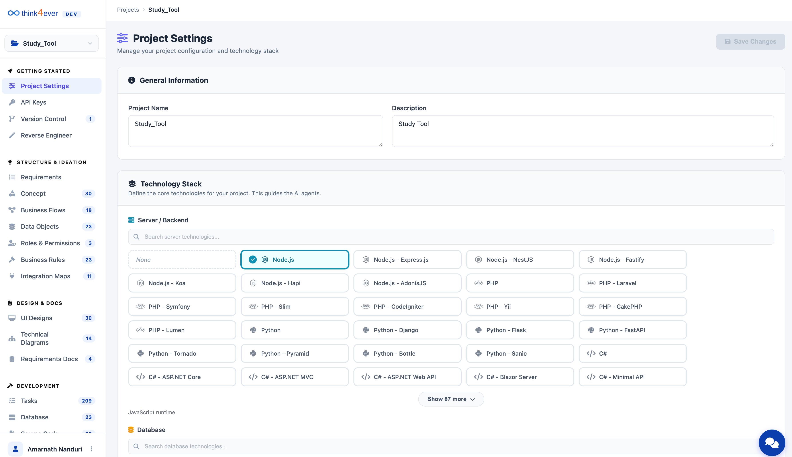
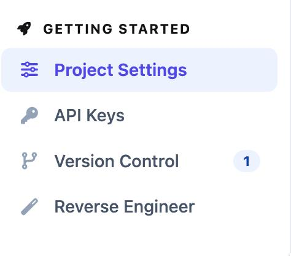
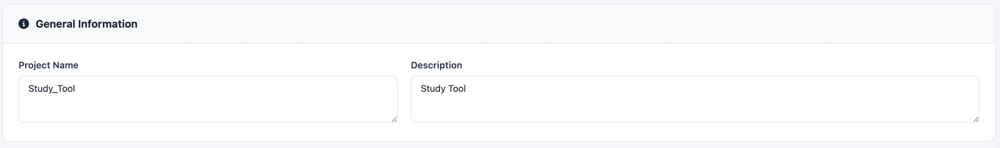
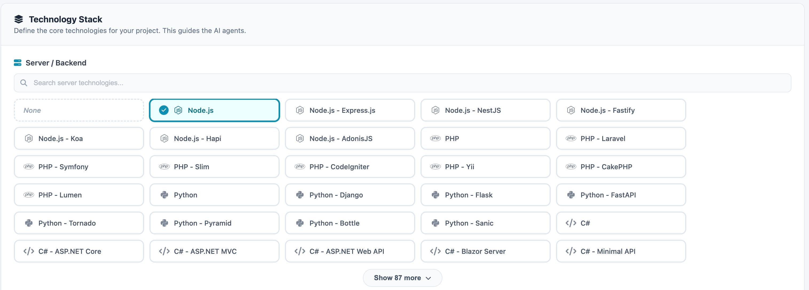
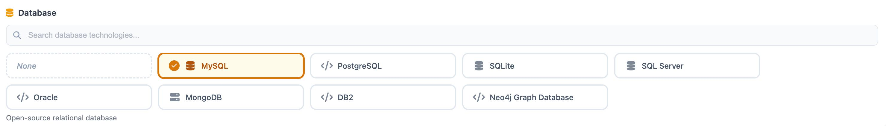
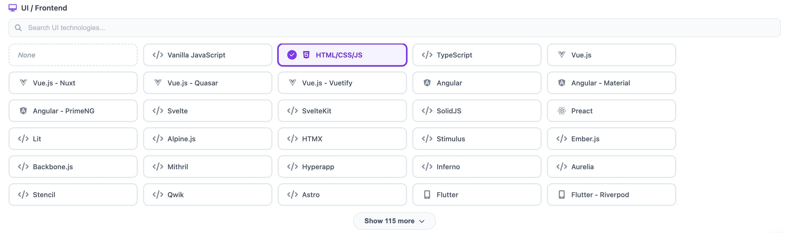

Getting Started
This module is the essential configuration phase where you define the core identity and technical DNA of your application. This section bridges the gap between conceptualization and development by establishing the project's parameters, security protocols, and integration points.
Core Objectives:
- Architectural Alignment: By selecting your specific Technology Stack (such as Node.js, Python, or C#), you calibrate the AI agents to generate code and documentation compatible with your preferred ecosystem.
- Environment Readiness: Configure API Keys and Version Control to ensure your project is securely connected to external services and your codebase is tracked from day one.
- Legacy Integration: Utilize the Reverse Engineer tool to ingest existing data or code, allowing the platform to understand and build upon your current technical foundation rather than starting from scratch.

Getting started has the following core submenus:

Project Settings
This is the command center for your application's identity. Use this section to define your Project Name and Description, and most importantly, configure your Technology Stack. By selecting your specific backend (e.g., Node.js), database, and frontend frameworks, you provide the necessary context for the AI agents to generate code and documentation that aligns with your environment.
API Keys
Manage your secure connections and third-party integrations here. This section allows you to generate, store, and rotate Authentication Keys required for external services. Ensuring your API keys are correctly configured is essential for enabling seamless communication between your project and outside platforms.
Version Control
Connect your project to your preferred Git provider (such as GitHub, GitLab, or Bitbucket). This section handles the synchronization between your local development environment and your remote repositories. You can track branch deployments, manage commits, and ensure that your codebase is properly versioned as you progress.
Reverse Engineer
Accelerate your development by importing existing assets. This tool allows you to upload current codebases, database schemas, or documentation so the platform can "read" your existing work. It maps out your current architecture, making it easier to build new features that are consistent with your established logic and structure.
Project Settings
The Project Settings page is where you establish the high-level identity of your project and calibrate the AI engine. The selections made here act as a "North Star" for all subsequent automated generations, ensuring that the code, diagrams, and business logic produced later are compatible with your specific environment.
1. General Information
This subsection defines the metadata for your project.
- Project Name: Enter a unique identifier for your application (e.g., Study_Tool). This name will appear across all exported documentation and reports.
- Description: Provide a concise summary of the project's purpose. A well-defined description helps the AI contextualize the functional requirements and user roles it will generate later in the process.

2. Technology Stack Configuration
The Technology Stack is the most critical component of the settings. It guides the AI agents in producing framework-specific syntax and architectural patterns.

2.1 Server / Backend
Select the primary language and framework that will power your application logic. The system supports a wide array of environments, including:
- JavaScript/TypeScript: Node.js (Express, NestJS, Fastify, Koa, Hapi, AdonisJS).
- Python: Django, Flask, FastAPI, Tornado, Pyramid, Bottle, Sanic.
- PHP: Laravel, Symfony, Slim, CodeIgniter, Yii, CakePHP, Lumen.
- C#: ASP.NET Core, ASP.NET MVC, Web API, Blazor, Minimal API.
2.2 Database
Identify the data persistence layer for your project. This selection informs how Data Objects and Database Schemas are visualized and scripted (e.g., SQL-based relational models vs. NoSQL document structures).

2.3 UI / Frontend Configuration
The UI/Frontend section is dedicated to defining the "Client Side" of your application. This configuration ensures that the AI-generated user interfaces, component libraries, and frontend logic are consistent with modern web or mobile standards.

Implementation Best Practices
To ensure the highest accuracy in your project outputs, follow these guidelines:
- Precision Matters: Selecting a specific framework (like Node.js - NestJS) rather than a generic runtime (like Node.js) allows the system to generate more precise boilerplate code and folder structures.
- Save Changes: Always click the Save Changes button in the top-right corner before navigating to other sections like API Keys or Business Flows to avoid losing your configuration.
- Iterative Updates: You can return to this section at any time to update your stack if your project requirements pivot during the ideation phase.